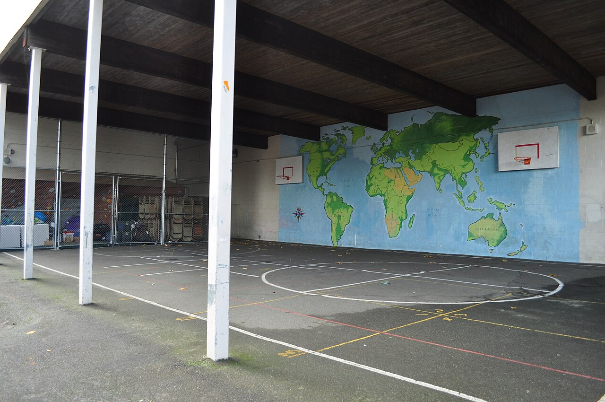
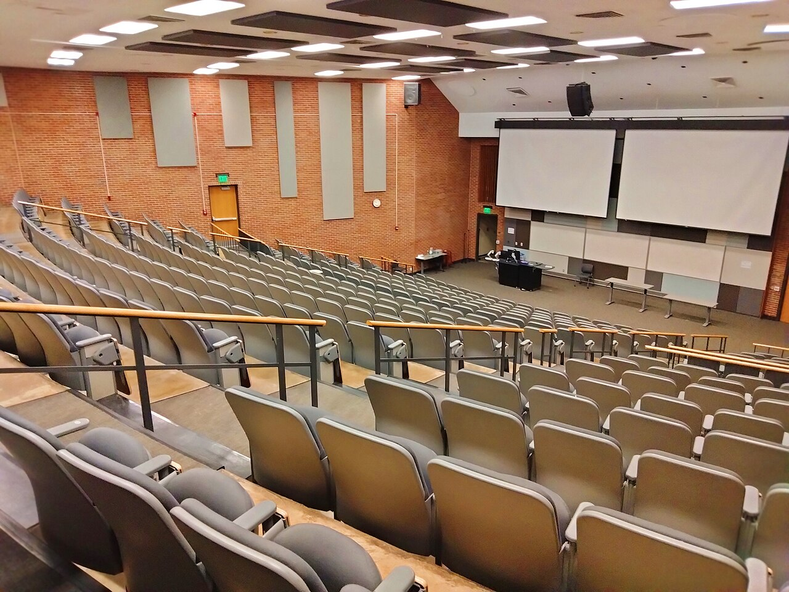
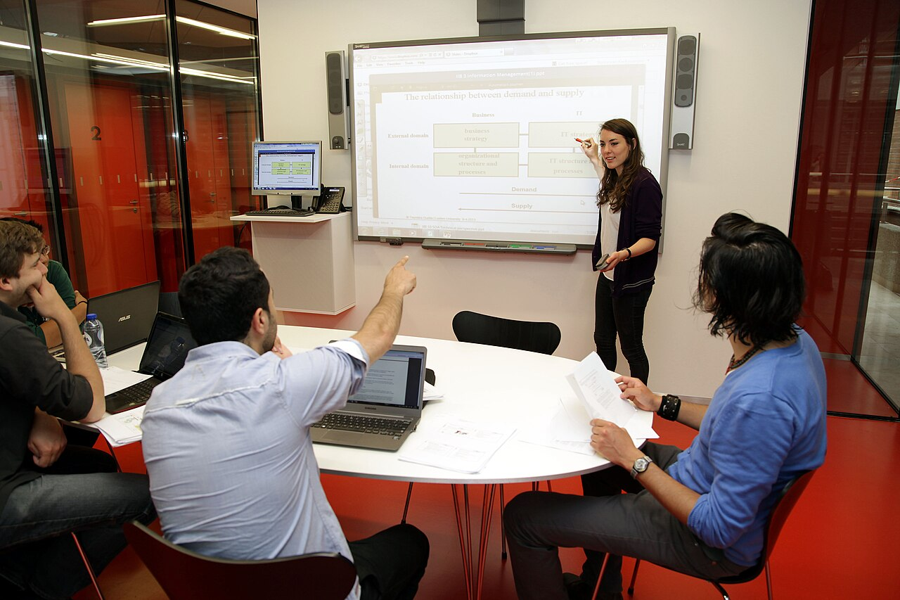

Biblioteca Central
Categoria: Estudo
Localização: Bloco A, 2º andar
Informação útil: Empréstimo de até 3 livros por 7 dias.
Ver detalhes da Biblioteca CentralVeja abaixo os principais espaços e serviços do campus, com categoria, localização e uma informação útil para o dia a dia. O primeiro local possui uma página com os detalhes completos.
Categoria: Estudo
Localização: Bloco A, 2º andar
Informação útil: Empréstimo de até 3 livros por 7 dias.
Ver detalhes da Biblioteca CentralCategoria: Estudo
Localização: Bloco B, térreo
Informação útil: 40 máquinas, aberto das 8h às 22h.
Categoria: Alimentação
Localização: Bloco A, térreo
Informação útil: Refeições de 11h30 às 14h, aceita cartão.

Categoria: Esporte
Localização: Área externa
Informação útil: Agendamento na secretaria, aberta até 21h.

Categoria: Eventos
Localização: Bloco C, 1º andar
Informação útil: 200 lugares, reservar com 1 semana de antecedência.

Categoria: Estudo
Localização: Bloco B, 1º andar
Informação útil: Salas com agendamento de 2 horas.